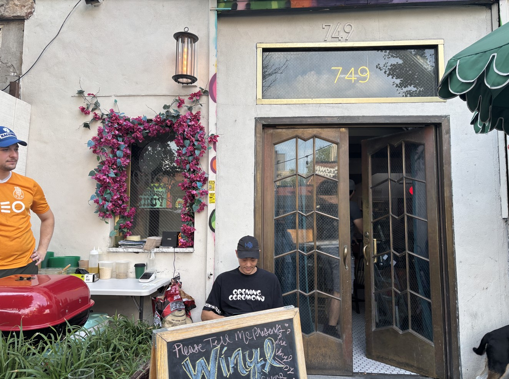

In Florence small windows serve wine at the perfect moment
by Annalisa Berti
You don't need much to make this toast: just be in Florence, keep your eyes open and you're good to go! The Buchette del Vino, or #WINE WINDOWS as they're now known globally, are back in use. They date back to the 17th century, when Florence was a wine-producing hub and noble families owned large vineyard estates. These small arched openings, often framed in stone, were used to sell wine by the flask directly to the public, bypassing taxes and shop-related fees. In addition to direct sales, the wine windows also offered social distancing advantages especially during epidemics like the 1630/1633 plague. And it was in 2020, during the Covid-19 pandemic, that they came back to life: some Florentine businesses started using them again to safely serve coffee, drinks, sandwiches, and gelato.
And today, just like back then, all it takes is a knock and a few seconds before the little door opens.
Once it does, you can order a glass of wine and raise a toast right in the streets of Florence.
Throughout history, writers and scholars have referenced these small windows in their letters and texts leaving behind what are now valuable historical testimonies of Florence.
1634: "The Florentine scholar Francesco Rondinelli discussed the use of "wine windows" during the plague as a way to prevent contagion, in his Report on the Plague (Relazione del contagio)".
1838: "American writer James Fenimore Cooper, known for The Last of the Mohicans, wrote in his travel letters (later published in Excursions in Italy) about his stay in Florence specifically at Palazzo Ricasoli where he noted the peculiarity of a wine window used to sell wine by the flask".
Even today, many tourists after visiting Florence Cathedral, the Uffizi, and the Vasari Corridor cross Ponte Vecchio in search of a glass of Chianti served through a tiny window. #winewindowsflorence is the hashtag trending on social media, but just how many of these little windows are there in the city?
As of today, 177 wine windows have been officially recognized within the City of Florence. Each one is marked with a brass plaque certifying its authenticity, thanks to the work of the Associazione Buchette del Vino.
Most of them are located in the historic center, where noble families once lived and brought their wine into the city to sell from their palaces.
These openings were just large enough for a wine flask to pass through, usually shaped like a small arched door and often framed by a decorative stone surround with a teardrop shaped keystone, and closed with a wooden shutter. Their elegant stone frames smooth or rusticated gave them a refined appearance, earning them the nickname "wine tabernacles." Architecturally, they were positioned on the ground floor, easily connected to the cellar, where a servant would handle wine sales during set hours.
Wine window in Florenze
The wine windows are located in all four historic districts of Florence: San Giovanni, Santa Maria Novella, Santo Spirito, and Santa Croce. The latter holds the record for the highest number of wine windows in the city.
SANTA MARIA NOVELLA: Developed around the stunning Renaissance basilica, this district has long been a crossroads for travelers and merchants. Its elegant streets exude a cosmopolitan charm, making it one of the city's most dynamic areas, where historic grandeur meets vibrant modern life.
SAN GIOVANNI: The beating heart of Florence, San Giovanni is home to the Duomo and the Baptistery iconic landmarks of the city. It was the epicenter of religious and civic power for centuries, hosting celebrations, revolutions, and historic events. Walking here means stepping directly into the solemn grandeur of the Florentine Renaissance.
SANTA CROCE: Cradle of thinkers, craftsmen, and intellectuals, Santa Croce blends cultural sophistication with a popular spirit. Dominated by the grand Franciscan basilica, the district boasts the highest number of wine windows in Florence a living testament to its enduring traditions.
SANTO SPIRITO: On the left bank of the Arno, Santo Spirito is regarded as the city's most authentic and bohemian neighborhood. Long associated with artisans, artists, and workshop life, it retains a strong and deeply rooted local identity.
The idea to reopen the wine windows came in May 2020, during the lockdown, when the Vivoli gelateria, in the heart of Florence, had the brilliant intuition to start serving coffee, drinks, and gelato safely through its wine window a resounding success! That same month, Vivoli opened its small window and began serving customers, inspiring three other venues to follow suit: Babae on Via Santo Spirito, Osteria delle Brache in Piazza Peruzzi, and Il Latini on Via dei Palchetti.
However, Florentines still call and have called these little holes by different names. The ages have passed, the years have changed Florence, but they, albeit with different names, have remained, simply eternal.
Over the years, the Associazione Culturale Buchette del Vino di Firenze has verified the authenticity of each wine window, certifying them with a brass plaque. These unique openings in the walls of Florentine buildings have gone by many names over the centuries, up to the present day.
Wine window in Florenze, Babae Restaurant
But the story doesn't end here for two main reasons: Quantity: The wine windows recorded so far, based on the Tuscany Region's dataset and the work of the Cultural Association, don't represent all of them. Citizens, wine lovers, and enthusiasts continue to report new windows both in Florence and across Tuscany. Reach: Thanks also to social media, wine windows have become famous worldwide. Some entrepreneurs, inspired by the Florentine tradition, have even recreated them abroad such as in New York City's Williamsburg neighborhood, where the venue "Please Tell Me" opened its own wine window a year ago. Even in Times Square, amid lights and billboards, the Florentine tradition meets the fast-paced rhythm of American innovation.

Wine window in Williamsburg, Brooklyn, New York City Wine window in Time Square, Manhattan, New York City